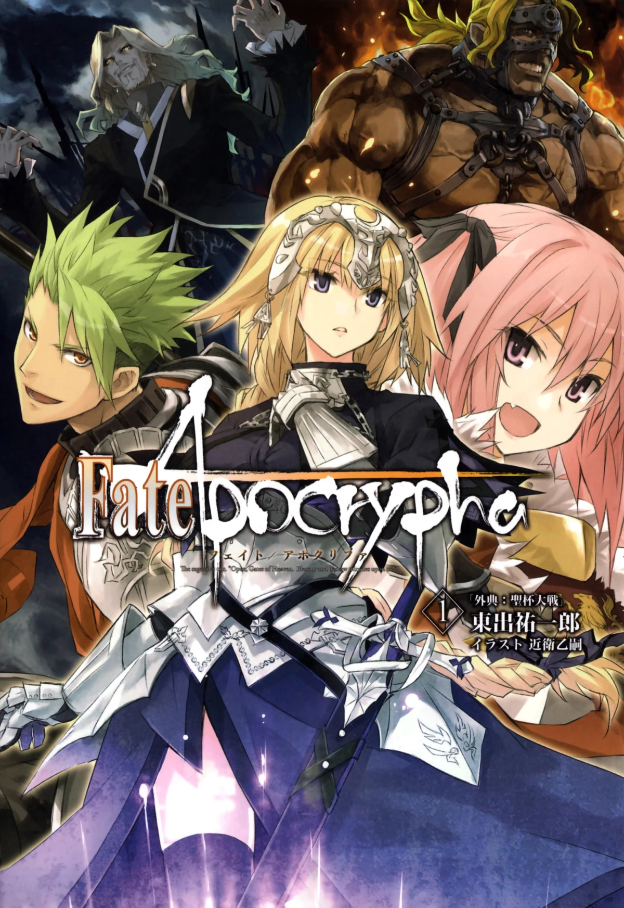
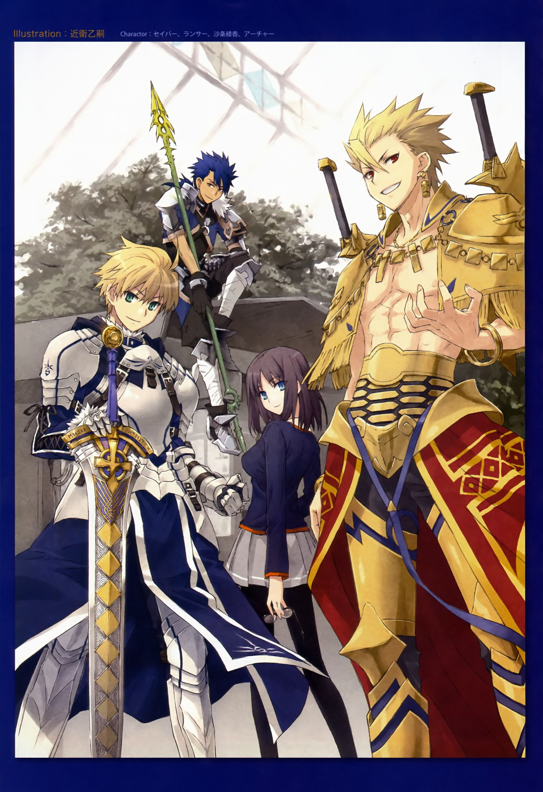

bienvenido a las series extras
se que te quedaste con ganas de ver mas cosas de stay night y del FGO pero no hay mas de esas lastimosamente, pero hay series extras que son autoconcluyentes a continuacion te dejo algunas para que disfrutes.
Fate/Apocrypha
Fate/Apocrypha es una historia de una guerra por el santo grial pero en vez de que sean 7 masters peleando entre ellos , son 2 equipos de 7 masters peleando contra los otros.No tiene mucho historia y se centra mucho en las peleas.
Fate/Extra: Last Encore

Fate/Extra: Last Encore es la historia del juego con el mismo nombre, pero nosotros no la empezamos a ver desde el principio. no puedo explicar mas por que serie spoiler
Fate/Prototype
Fate/Prototype es un especial de 8 minutos que muestra como iba a ser fate en su primera instacia.